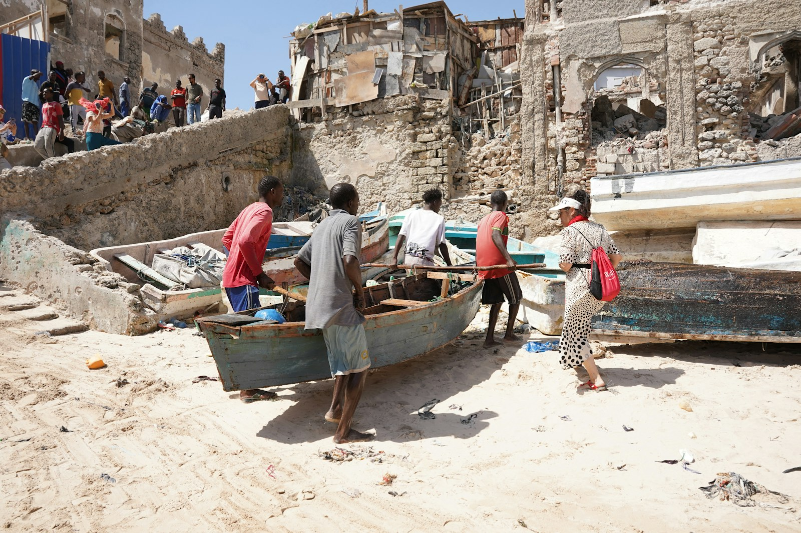

October 25, 2026
Turkey’s Red Sea Bet Could Open a Door for Laas Qoray
As Turkey deepens its maritime, energy and security role in Somalia, the North East State should be ready with projects investors can actually fund.

Bloomberg’s October 25 report, “Erdogan’s Somalia Bet Pulls Turkey Into a Wider Red Sea Contest,” describes how far Turkey’s footprint in Somalia now reaches. Turkish companies built and run Mogadishu’s airport and manage its seaport. Turkey trains Somali soldiers at its TURKSOM academy, flies drones and fighter jets over the country, and in April began drilling Somalia’s first deepwater well, Curad-1, offshore.
This is no longer an aid relationship. It is ports, maritime security, offshore energy and long-term strategic infrastructure, and it tells us something important: Somalia’s coastline has become one of its most valuable assets.
The reason is the sea lane. With shipping through the Strait of Hormuz disrupted and the Houthis threatening the Bab el-Mandeb, more of the world’s traffic between the Suez Canal and the Indian Ocean has to pass Somalia’s northern coast. That northern coast is ours too.
Bloomberg also draws the same line I wrote about last week in The Map We Never Signed. Turkey and Saudi Arabia back the federal government and a Somalia that stays whole. The UAE and Israel have built their ties with separatist and semi-autonomous regions. The North East State chose Somalia, and it sits on that same coast.
So the question for us is practical. How do we turn the world’s interest in Somalia’s waters into investment, jobs and opportunity for our own people? One answer is Laas Qoray.
From Mogadishu’s port to Laas Qoray
In February, Somalia’s cabinet approved a maritime cooperation agreement with Türkiye covering maritime trade, port modernisation and shipping, and the recognition of seafarers’ certificates. The direction is clear: ports and shipping are becoming the centre of Somalia’s relationships with its partners.
The North East State should treat that as an opening for its own coast. Our constitution already names Laas Qoray, on the Gulf of Aden, as the state’s second capital and its commercial city. It could support commercial fishing, seafood processing, cold storage and regional trade.
Our own people are not waiting for anyone. Women of the Midnimo association from across Sanaag, North East State, have been volunteering at Laas Qoray port with their own hands.
That is the practical starting point. Rather than simply calling for a big port, the North East State can build a credible, costed proposal that partners can actually evaluate.
Could Saudi Arabia be part of it?
On February 19, Saudi Arabia’s Transport General Authority and Somalia’s Ministry of Ports and Marine Transport signed their own maritime cooperation agreement, aimed at passenger and cargo shipping and closer maritime links between the two countries.
To be clear, there is no public commitment from Saudi Arabia to finance Laas Qoray. But the relationship gives us a door to knock on: Saudi investors may be interested in fisheries, food processing, logistics and coastal infrastructure.
Turkey and Saudi Arabia do not have to be competing choices. The North East State can approach both, and others, with clearly defined projects and transparent terms, working through the federal institutions that sign Somalia’s agreements.
Nor should we be naive. Analysts at RUSI warn that this contest among regional powers is transactional, and that it can feed Somalia’s instability as easily as it eases it. That is one more reason to arrive with our own plan rather than wait for someone else’s.
What the North East State should do now
The first priority is turning ambition into an investable plan. Commission an independent feasibility study. Assess the coastal conditions and what a port would need. Identify the likely customers. Put real numbers on the essential infrastructure. And consult the fishing communities, local businesses and the relevant federal authorities before anything is promised.
Then build in phases. Start with fishing facilities, ice production, refrigerated storage and processing. Consider a larger commercial port only after that base is working.
That is a realistic route to jobs, better market access and new business for local entrepreneurs, without assuming a major international investor will simply appear.
Bloomberg’s reporting shows how much Somalia now matters to Turkey and the wider Red Sea. The lesson for the North East State is not to wait for geopolitical competition to deliver development. It is to prepare projects that investors can understand, evaluate and finance.
The coast is ours. The plan has to be ours too.
Sources: Erdogan’s Somalia Bet Pulls Turkey Into a Wider Red Sea Contest, Bloomberg, October 25, 2026; Somalia, Türkiye maritime cooperation deal, Anadolu Agency, February 2026; Transport General Authority signs maritime cooperation agreement with Somalia, Saudi Press Agency, February 2026; The New Scramble: Turkey, Somalia and the Battle for the Red Sea, RUSI, May 7, 2026; Constitution of the North East State, Article 9.
Responses
Corrections, counter-arguments and first-hand accounts are welcome. Comments are read before they appear.